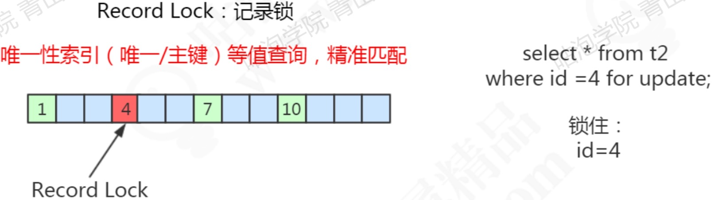
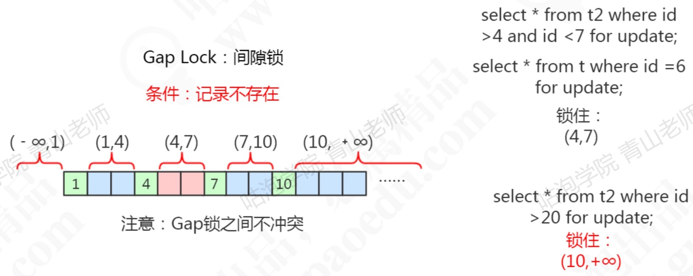
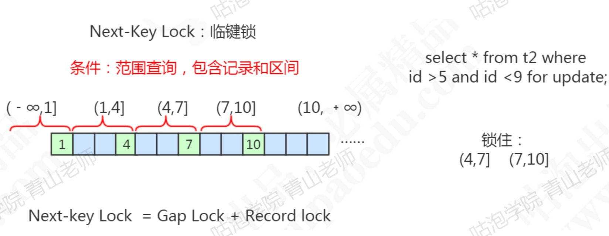

简介
MyISAM只支持表锁，InnoDB支持表锁和行锁，InnoDB的行锁其实是锁的索引
锁的类型
共享锁
行级别，又称读锁，多个事务可以共享一把锁。主要用于不允许其他事务修改数据的情况，加上共享锁后不要写数据，可能会死锁。
通过select...lock in share mode来加锁，事务结束后锁自动释放。
排他锁
行级别，又称写锁，一个事务加锁后，该行的写锁和读锁都不能被其他事务获取。
通过SELECT...FOR UPDATE来加锁，增删改类型的会默认加锁。
意向共享锁
给一行数据加共享锁前，数据库会自动在表上加意向共享锁，作用为提高加表锁时的效率（加表锁前需要确保没有行锁，如果没有这个意向锁就需要全表扫描来确定有没有行锁）。
意向排他锁
给一行数据加排他锁前，数据库会自动在表上加意向排他锁，作用为提高加表锁时的效率（加表锁前需要确保没有行锁，如果没有这个意向锁就需要全表扫描来确定有没有行锁）。
自增锁
一种特殊的表锁，防止自增字段重复，数据插入后就会释放，不需要等到事务提交才释放。
行锁的算法
记录锁
对于唯一性索引（唯一索引和主键索引）使用等值查询，精准匹配到一条记录的时候，使用的记录锁。

间隙锁
查询的记录不存在，没有命中任何一个record，无论使用等值查询还是范围查询，都是使用的间隙锁，其主要目的是为了阻塞插入类型，select类型的不会被阻塞。

临键锁
使用范围查询，不仅命中了record，还包含了gap，使用的临键锁。

不同隔离级别对应的锁
RU
不加锁
RC
普通的select基于mvcc，不加锁，加锁的select使用记录锁
RR
普通的select基于mvcc，不加锁，加锁的select以及update、delete会使用记录锁、间隙锁、临键锁
Serializable
所有的select都会被转换为select...in share mode，会和update、select互斥